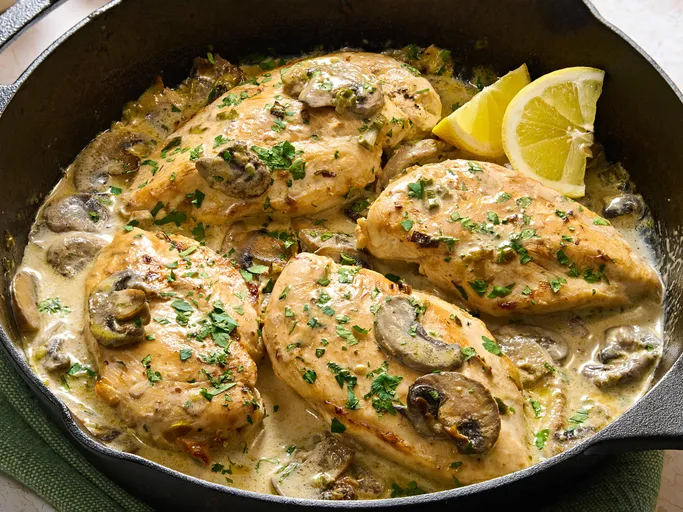

Easy Chicken Marsala
This is a simple and delicious recipe for chicken marsala, a classic Italian dish that's perfect for a quick weeknight dinner.icken Marsala made quick and easy with pan-fried tender chicken breasts braised in Marsala wine with cream and mushrooms. Serve with cooked pasta or mashed potatoes to soak up the delicious sauce.

Ingredients:
- 4 chicken breasts
- 1 cup Marsala wine
- 1/2 cup heavy cream
- 8 oz mushrooms, sliced
- 2 cloves garlic, minced
- 2 tbsp butter
- 2 tbsp olive oil
Instructions:
- Season chicken breasts with salt and pepper.
- Heat olive oil in a large skillet over medium-high heat.
- Cook chicken breasts for 5-7 minutes on each side, or until golden brown and cooked through. Remove from skillet and set aside.
- In the same skillet, add butter and garlic. Sauté for 1 minute.
- Pour in Marsala wine and cream. Bring to a boil.
- Reduce heat and simmer for 5 minutes, or until sauce has thickened.
- Return chicken to the skillet and coat with the sauce.
- Serve with cooked pasta or mashed potatoes.
Back to Home